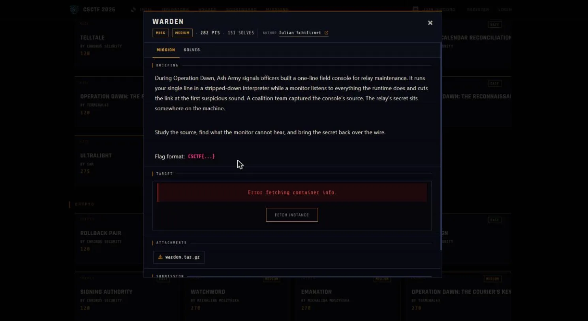

01Start point: read jail.py and pin down what the monitor hears
- What I found: the line runs with empty builtins behind two gates. A static check requires one line, at most 4096 characters, that parses and contains no import statements. Then a CPython audit hook is installed that exits the process on any audit event except attribute reads and exactly one exec. The exit and write functions are captured by value in the closure, and audit hooks cannot be unregistered, so the sandboxed code has nothing to grab to remove it.
- Thinking: the one allowed exec is consumed by the jail's own exec call, which fires before my line runs, so I get no exec, eval, compile, import, open or subprocess of my own. The compile also happens before the hook is installed because compile is itself audited, a hint that the hook is the only real lock.
- Result: the hook is the lock, so the question is what it cannot hear.

02Pivot: the hook only runs when an audit event is raised
- What I found: CPython raises audit events only for a fixed set of interesting operations (open, import, compile, exec, os.system, subprocess, socket and similar). Pure Python computation raises nothing: attribute access, method calls, list, dict and string operations, formatting.
- Thinking: if an operation raises no event, the hook is never called and the operation just runs, so silent means allowed. A file open would be fatal, so the secret must be reachable without opening a file, meaning an environment variable or something already in memory.
- Result: the escape only has to stay off the audited operations.
03Pivot: reach the already-loaded os module through the object graph
- What I did: with empty builtins there are no names to start from, only literals, so I walked from a plain object up to its base class and listed every loaded class, then picked a class from the os module that is always defined once os is imported. Its initializer's globals are the os module's namespace, so they already hold the environment and the write function.
- Thinking: this needs no import event and no open event, only attribute reads (which the warden allows) and ordinary dict and string operations (which raise nothing).
- Result: a path from literals to the environment and a write function without a single audited call.
04Exploit: dump the environment to the wire
- What I did: sent one line that formats the environment variables as text and writes them to stdout using that captured write function, with no builtins used anywhere. A local check against a copy of jail.py with a planted flag in the environment printed the whole environment with no warden message, so every operation was silent. The exact one-liner is in solve.py.
- Result: against the live console it worked on the first attempt, and the environment held the secret: FLAG=CSCTF{KsGjqClMT9Atn52ScQTFU1ha}. The offline demo ends with "demo OK: gadget read the environment silently". Reproduction needs the live challenge server, which is now unavailable.